5.11. 查询多媒体模块调试信息
5.11.1. 驱动与多媒体系统交互
在VIN中，camera相关的控制全部在用户态完成，而mipi/ISP的控制则在驱动中完成，通过将用户态相关的配置传递给驱动，由驱动使用，对硬件进行设置，各个相关的设备节点如下：
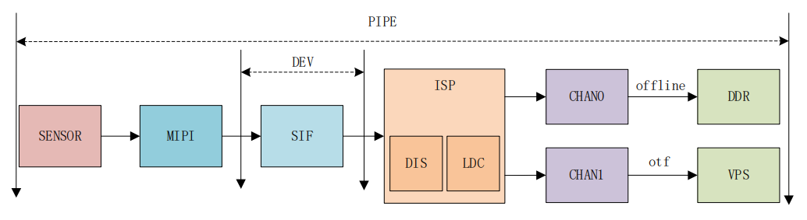
mipi_host0~4: mipi host配置节点，主要完成mipi_host的初始化。
mipi_dphy: dphy相关节点。
mipi_dev0: 该设备节点会在配置中使能，配置mipi_dev输出。
SIF共有两个节点：
sif_capture: 设置sif相关属性信息，对sif模块初始化，可以dump sif模块出来的图像。
sif_ddrin: 设置ddrin节点的属性信息/尺寸/格式等，sif-offline-isp场景才使用，负责读内存数据给isp。
ISP相关节点：
ac_calib: calibration效果库设置。
ac_isp: isp效果调节接口使用。
ac_isp4uf0~7: isp驱动算法库发command使用。
ac_sbuf0~7: 算法库通过该设备节点与isp驱动同步一些算法数据。
video0~7: isp v4l2设备节点，设置尺寸/格式/大小，内存映射通过该节点与设备交互。
VIN中，MIPI/SIF的功能相对简单，对于MIPI实际上就是硬件上抽象出来的几个节点，用于用户配置参数，从而设置MIPI HOST到对应的状态，能够接受sensor的MIPI数据输入；
而SIF则是将MIPI HOST收到的数据再进行一定的处理，比如将不同sensor的数据保存到不同的ddr地址等；
ISP的功能相对来说是最复杂的，它需要和sensor交互/需要加载对应的算法库/需要加载对应的效果库，在配置代码中：
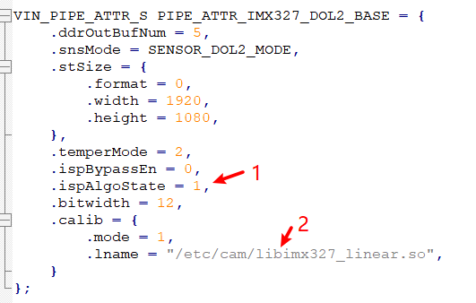
ispAlgoState: 这个标签表示使用3A算法，将会使用lib_algo.so库的算法；
calib： 这个则是不同sensor配置出来的效果库，用于调整sensor效果；
5.11.2. VIO调试信息
5.11.2.1. SIF调试信息
查看SIF调试信息：
cat /sys/devices/platform/soc/a4001000.sif/cfg_info
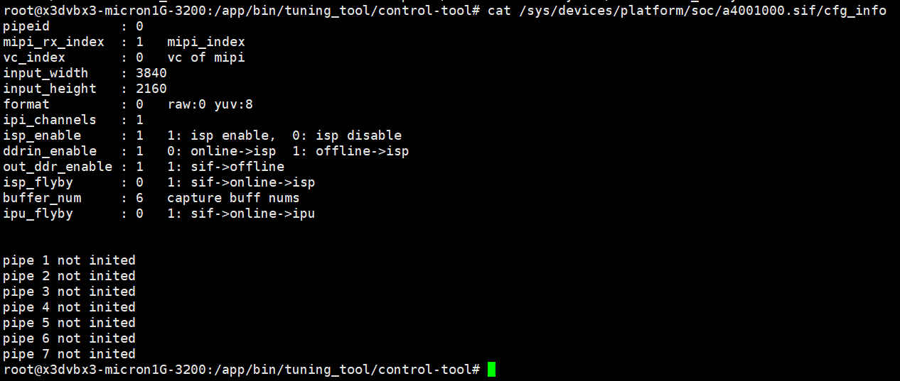
5.11.2.2. ISP调试信息
查看ISP调试信息：
cat /sys/devices/platform/soc/b3000000.isp/isp_status
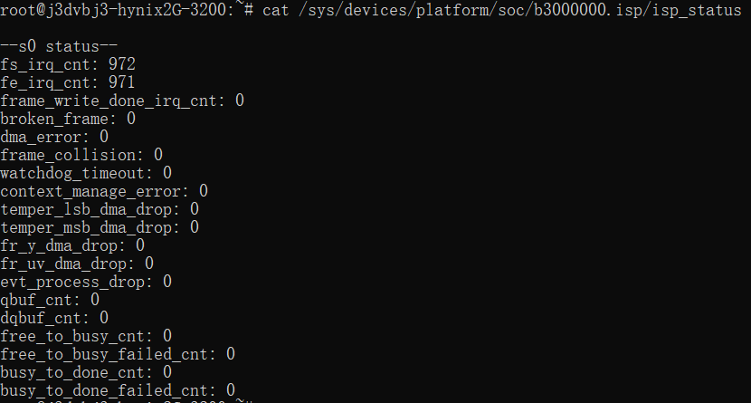
5.11.2.3. IPU调试信息
查看当前哪些pipe使能：
cat /sys/devices/platform/soc/a4040000.ipu/info/enabled_pipeline
查看各pipe配置情况：
cat /sys/devices/platform/soc/a4040000.ipu/info/pipelinex_info # x 取值0-7
# 示例
cat /sys/devices/platform/soc/a4040000.ipu/info/pipeline0_info
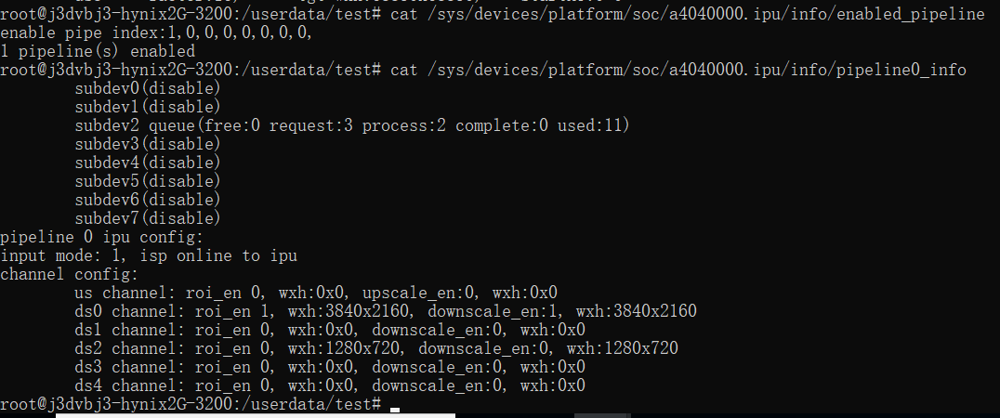
说明：
subdev0对应ipu src，sbudev1~6对应ipu us/ds0~ds4。subdev后面括号里的信息表示这个通道的buffer在各个状态的数量。
5.11.2.4. PYM调试信息
查看当前哪些pipe使能：
cat /sys/devices/platform/soc/a4042000.pym/info/enabled_pipeline
查看各pipe配置情况：
cat /sys/devices/platform/soc/a4042000.pym/info/pipelinex_info # x取值0-7
# 示例
cat /sys/devices/platform/soc/a4042000.pym/info/pipeline0_info
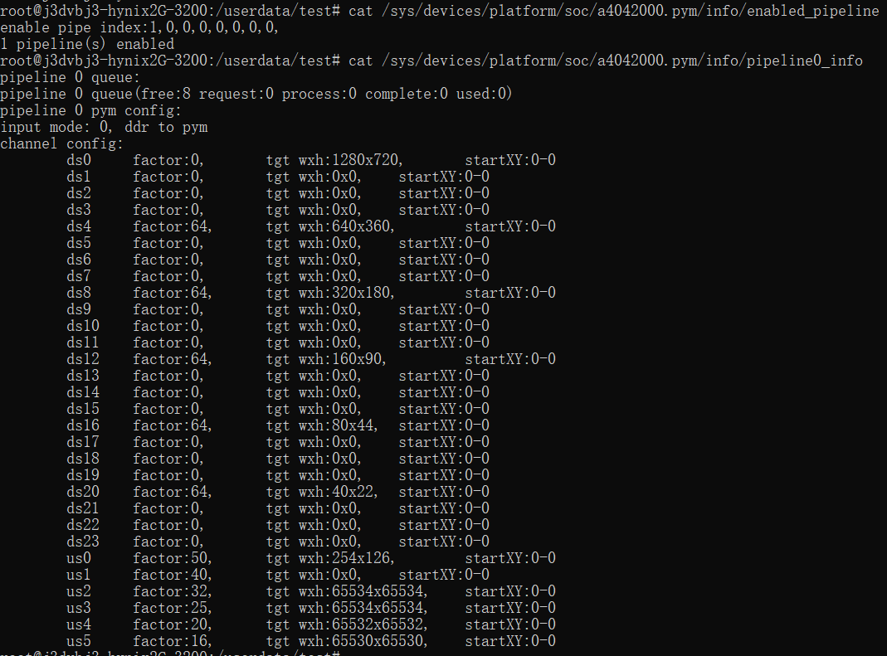
5.11.2.5. IAR调试信息
查看IAR调试信息：
cat /sys/kernel/debug/iar
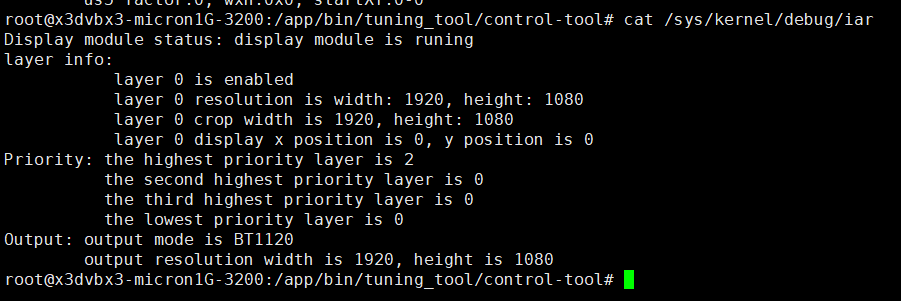
5.11.3. VPU调试信息
5.11.3.1. VENC调试信息
查看编码信息：
cat /sys/kernel/debug/vpu/venc
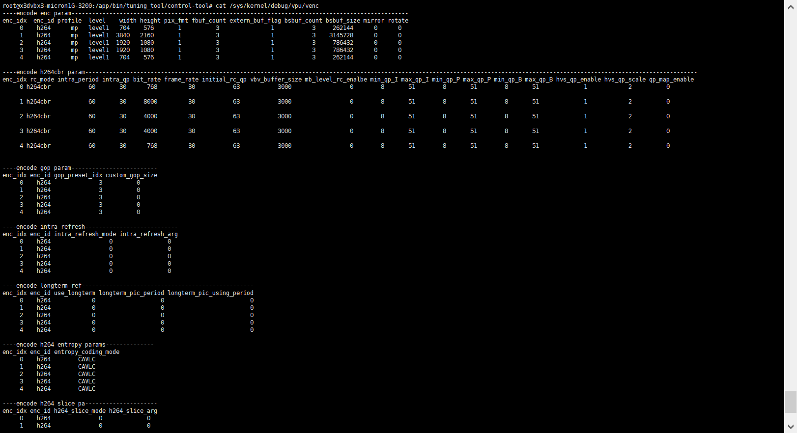
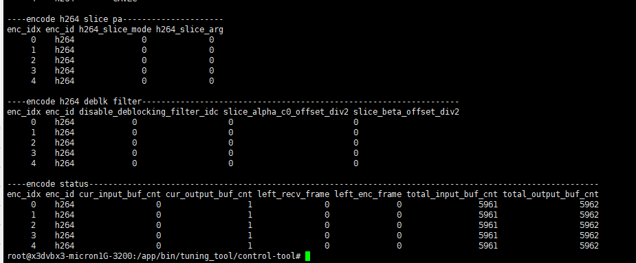
5.11.3.2. VDEC调试信息
查看解码信息：
cat /sys/kernel/debug/vpu/vdec
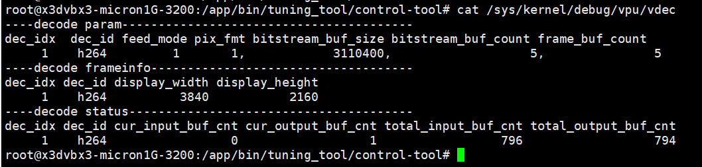
5.11.4. JPU调试信息
5.11.4.1. JENC调试信息
查看编码信息：
cat /sys/kernel/debug/jpu/jenc
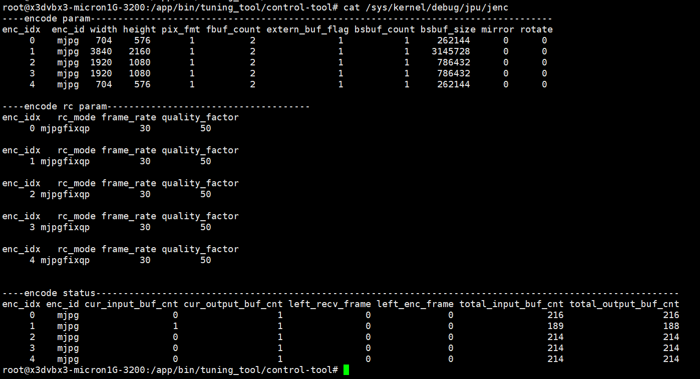
5.11.4.2. JDEC调试信息
查看解码信息：
cat /sys/kernel/debug/jpu/jdec
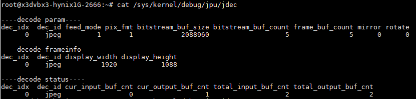
5.11.5. 媒体模块日志查看
5.11.5.1. 日志级别
控制台输出日志和logcat查看日志是二选一的关系，通过环境变量LOGLEVEL来控制。
如export LOGLEVEL=14，即把比Debug级别高的日志（<=14）全部输出到Console。
如果想通过logcat查看Debug及更高级别的日志，需要export LOGLEVEL=4。
| 控制台输出日志 | 通过logcat查看日志 | ||
|---|---|---|---|
| CONSOLE_DEBUG_LEVEL | 14 | ALOG_DEBUG_LEVEL | 4 |
| CONSOLE_INFO_LEVEL | 13 | ALOG_INFO_LEVEL | 3 |
| CONSOLE_WARNING_LEVEL | 12 | ALOG_WARNING_LEVEL | 2 |
| CONSOLE_ERROR_LEVEL | 11 | ALOG_ERROR_LEVEL | 1 |
5.11.5.2. 日志标签
媒体模块内部定义了一些LOG_TAG，所有TAG如下：
| vio-core vio-devop ipu sif dwe gdc pym vin isp rgn mipi vp vps venc vdec audio vot vio-bufmgr ffmedia multimedia |
|---|
注意：
没有标签的日志不能过滤，在满足LOG LEVEL级别的情况下会被打印出来（一般见于应用程序或没加TAG的模块）。
如果想给应用程序加上TAG：
可以在文件最开头定义#define LOG_TAG “APP”
包含相关头文件 #include “logging.h”
应用程序中的日志打印用logging.h头文件中的pr_xxx开关的宏定义
5.11.5.3. 日志过滤
各模块日志均可通过logcat来过滤查看，这里介绍下模块相关如何过滤。logcat是开源的命令，其他参数可自行探索。
例如只想打印vps部分且日志级别高于Debug的日志，并输出到文件可以这样操作：
logcat vps:D -f log.txt
想查看多个模块的日志可以在后面追加过滤如查看vps/vin模块且级别高于Debug的日志：
logcat vps:D vin:D -f log.txt
5.11.5.4. 日志存储
内核日志会保存在/userdata/log/kernel/目录；
LOGLEVEL设置为4，上层日志会保存在/userdata/log/usr/目录；